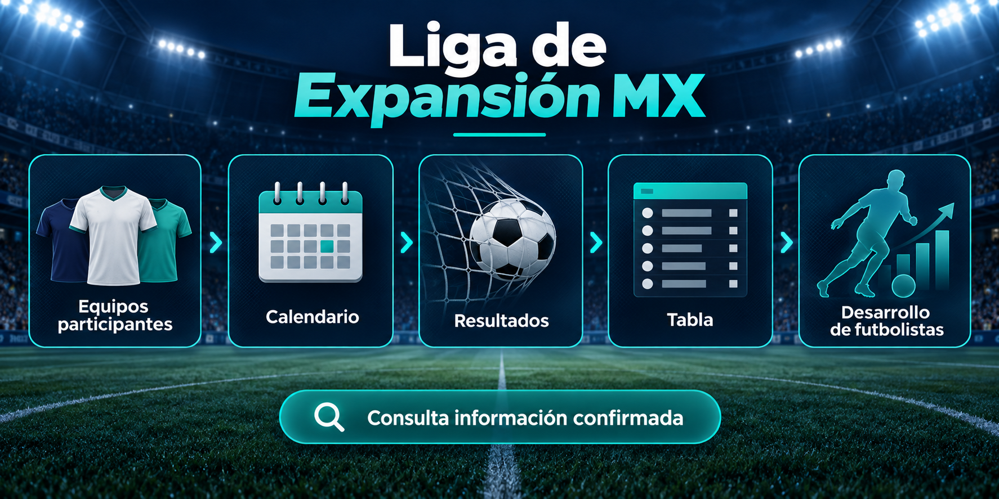

Su lugar en el sistema del fútbol mexicano
La Liga de Expansión MX es una competencia profesional con calendario, tabla, resultados y equipos participantes propios. Sus estadísticas deben consultarse por separado de las de Liga MX.
Su función deportiva y administrativa ha evolucionado. Las condiciones de participación, certificación y movimiento entre divisiones pueden modificarse de un ciclo a otro, así que una regla histórica no debe tratarse como vigente sin confirmación.
Formato del torneo
La competencia suele organizarse en torneos cortos con fase regular y fase final. El número de clubes, el sistema de clasificación, los cruces y los criterios de desempate dependen del reglamento de cada edición.
Antes de interpretar una posición o un posible cruce, identifica el torneo y la jornada que cubre la información. El reglamento vigente es la referencia para decidir cómo se clasifica y cómo se resuelven las igualdades.
Tabla, resultados y partidos
La tabla de Liga de Expansión MX permite comparar rendimiento colectivo. Los resultados explican qué marcadores provocaron cada cambio; la página de partidos permite revisar encuentros programados.
Separar estas consultas evita confundir un partido futuro con un resultado oficial. Comprueba siempre la jornada y la fecha de revisión cuando los datos puedan cambiar.
Equipos participantes y proyectos regionales
Los equipos participantes representan proyectos de distintas ciudades y regiones. Su lista puede variar entre temporadas, por lo que conviene revisar el directorio del torneo en lugar de apoyarse en listados antiguos o en referencias de otra competencia.
Además de competir por los objetivos de cada torneo, muchos proyectos dan continuidad a futbolistas jóvenes y también ofrecen espacio a jugadores con experiencia. Esa combinación hace que el desarrollo de futbolistas sea una parte relevante de la categoría, sin sustituir la identidad deportiva de cada club.
Relación con Liga MX
Liga de Expansión MX y Liga MX comparten el contexto general del fútbol mexicano, pero no una sola clasificación ni un solo calendario. Para comparar conceptos de la primera división, revisa cómo funciona el descenso en Liga MX; para datos de esta competencia, usa siempre sus páginas específicas.